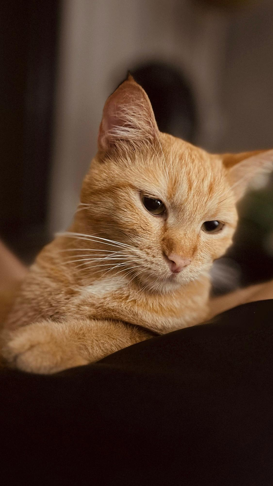
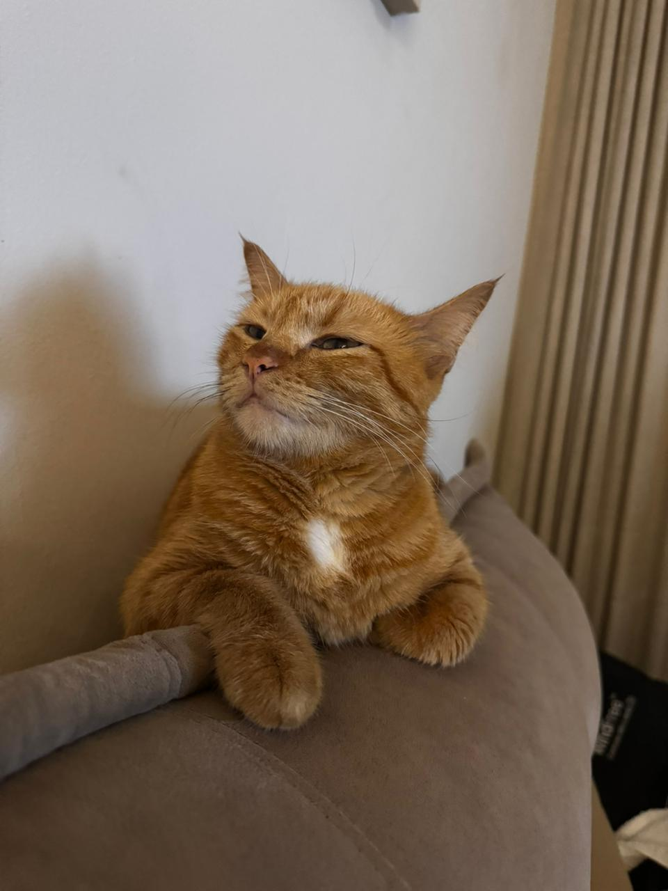

Sobre Espoleta
Sou uma gatinha amarela e, apesar de ser cheia de personalidade, sou bem reservada quando se trata de contato físico. Não deixo qualquer um chegar perto — aceito carinho apenas da minha humana, com quem tenho um vínculo muito forte. Com ela, me sinto segura para demonstrar afeto do meu jeitinho. Mesmo assim, adoro brincar com os outros gatos da casa; corro, persigo, provoco… faço a minha própria bagunça felina. E quando chega a hora de descansar, subo para o meu lugar favorito: o topo do guarda-roupas. Lá de cima, durmo tranquila e ainda aproveito para observar tudo de longe, como a verdadeira guardiã silenciosa da casa.